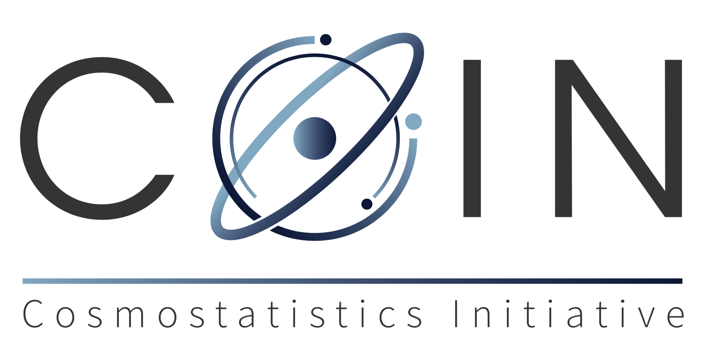

C
Community
COIN
International collaboration across astronomy, statistics, machine learning, and scientific software.

Cosmostatistics Initiative
An international research network connecting astronomy, statistics, machine learning, and scientific software. I founded and co-chair COIN as a space for collaborative, method-driven astronomical science.

COIN cosmostatistics-initiative.org Research projects People HighlightsNetwork
COIN projects sit at the boundary between astronomical data problems and statistical methodology: transient discovery, spectral classification, catalogues, weak lensing, galaxy morphology, and survey-scale inference.
International collaboration across astronomy, statistics, machine learning, and scientific software.
Selected COIN work on surveys, transients, catalogues, inference, and statistical learning.
Work connecting alert streams, broker science, active learning, and transient discovery.
Shared methods, reproducible analyses, and public-facing project records.